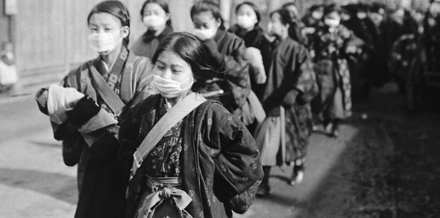
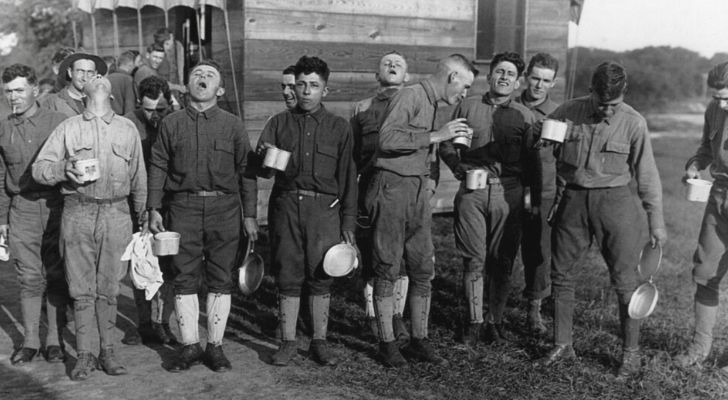
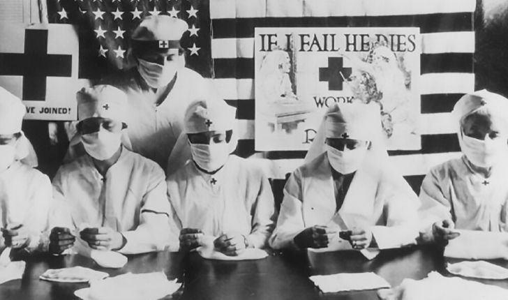
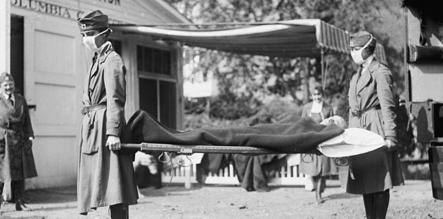
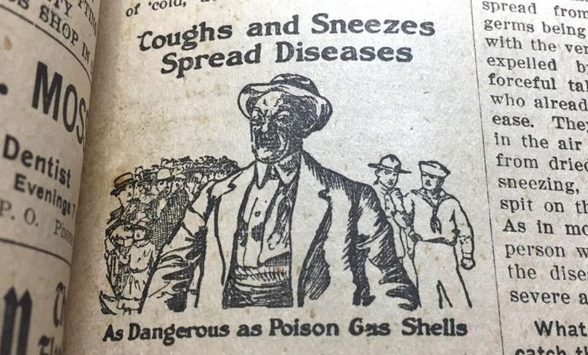

JUST-UPLOAD
JUST-UPLOAD

Influenza, or the flu, is a type of virus that specifically targets our body’s respiratory system.
The virus typically infects your lungs, throat, or nasal passages.
Because of the areas it infects, it’s typically spread when someone with the flu sneezes, coughs, or talks.
You can also be infected if you touch a surface that has recently been in contact with the virus and then touch your eyes, nose, or mouth.
For example, if someone sneezes on a handrail and you touch it before scratching your eye, you could possibly catch the virus.
Like many others around the world, I too have at some point in time convinced myself that I am dying from the flu.
Just like the majority of these people, I was simply being melodramatic and recovered soon after.
While most people these days will recover from the flu without any serious trauma or risk of death, this is not always the case.
Let’s take a look at one of these more deadly varieties, the Spanish Flu.
The worst flu on record is the Spanish Flu, which struck the world from 1918-1919.
The official worldwide death toll of the Spanish Flu was somewhere between 20 to 50 million people, although this is possibly a severe under-calculation.
It’s suspected that the real numbers were somewhere around 100 million, with the extra numbers coming from regions that didn’t keep medical records of the cases.It’s suspected that the real numbers were somewhere around 100 million, with the extra numbers coming from regions that didn’t keep medical records of the cases.
If the inflated numbers are to be believed, then more than 3% of the world’s population died from the Spanish Flu!

The Spanish Flu struck in the early months of 1918, in the final year of World War I.
In 1918 the majority of the world’s nations were censoring media to prevent any unwanted news affecting the morale of their troops.
As such, these nations chose to censor any information about the new strain of flu to keep their soldiers focused on the war.
Spain was neutral in the war though, so their media was free to report on whatever they wished.
People came to believe that the flu came from Spain because they were the only European power that was reporting about it.
The irony here? Spanish media called it the French Flu!

The first wave of the flu spread throughout the world in the early months of 1918, and was a relatively mild form.
Most people who caught the Spanish Flu reported very typical flu symptoms and recovered within a small number of days.
There weren’t all that many deaths, either. The second wave hit later that year, with the beginning of the fall in the northern hemisphere.
This second wave is said to have been much more deadly, possibly due to mutations in the virus.
It is also believed that this second wave spread to more parts of the world due to increased troop movements during the final stages of World War I.
The third wave began in Australia in January 1919, and although it is considered to have been just as deadly a form as the second wave, it didn’t spread as far as the war had already ended.

When the second wave of the Spanish Flu struck the US, it struck hard and fast.
It happened around the same time that the US’ largest contingent of soldiers, some 1 million men, headed to the front lines.
It’s estimated that around 26,000 men died during this single offensive, the single greatest loss of American troops during the entire war.
The Spanish Flu, on the other hand, killed nearly twice this amount.
Around 15,000 soldiers lost their lives to the flu while stationed in France, with another 30,000 soldiers killed by the flu while on US soil.

The leading medical experts of the world were completely clueless when it came to fighting the Spanish Flu.
With no known cure available, doctors turned to whatever they thought would help or at least alleviate the symptoms.
One suspected cure-all was aspirin, a relatively new drug at the time.
Doctors in the US recommended that patients take as much as 30 grams of aspirin per day, a recommendation that proved fatal.
It was unknown at the time that aspirin is actually highly toxic in high doses, something that’s considered to have boosted the number of deaths in the second wave of the virus.
Aspirin is of course still used today, although never in doses more than 4 grams a day.
The common forms of influenza aren’t typically fatal.
Those that are most affected are usually young children, pregnant women, those over 65, or people with particular medical conditions.
The Spanish Flu was different, though.
Many of the lives that were claimed by the virus were young men and women who had shown no signs of pre-existing conditions that could complicate the matter.
While this is highly unusual, so was the Spanish Flu.

Many cities throughout the US tried a number of different tactics to prevent the spread of the Spanish Flu, with varying degrees of success.
Some cities reacted faster than others, banning mass gatherings early on. Others were not so prudent and waited as long as a few weeks after their first case to do so.
It was found that those that implemented tight restrictions at the first onset of the virus had death rates 50 percent lower than others who took longer.
It was also found that those who lifted restrictions too early caused the virus to return en masse, while those who kept their restrictions for longer saw the virus die out.

It would be easy to assume that the Spanish Flu was some incredibly rare form of the virus due to the destruction it wrought upon the world.
Scientists have managed to study the genetics of the virus from samples taken from the bodies of infected individuals that were frozen for decades in the permafrost of Alaska.
It was discovered that the Spanish Flu is just another variation of the H1N1, the most common form of the flu found today.
As the world becomes more and more overpopulated, so does the risk of a pandemic.
When you combine this with the ever-increasing globalization of the world, you’re going to start to see problems.
This is, in essence, how a deadly strain of a common virus managed to wipe out some 100 million people over the course of two years.
It’s important for us to remember the lessons taught by this pandemic, as we’re going to start to see more and more of them, even after COVID-19.